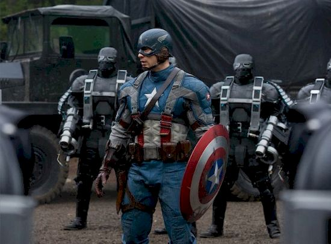
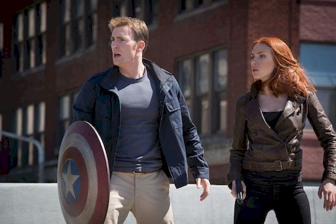
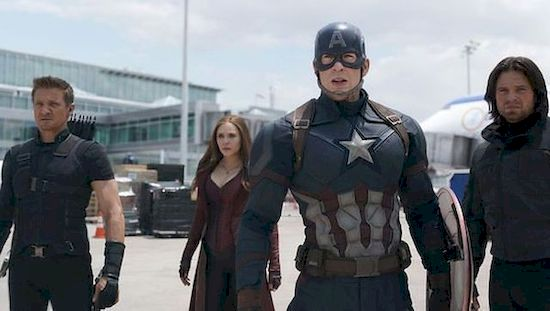

Film koncentruje się na wydarzeniach w czasie II wojny światowej, opowiada historię Steve’a Rogersa, chorowitego chłopaka z Brooklynu, który zostaje poddany programowi superżołnierza i staje się superbohaterem o imieniu „Kapitan Ameryka”.
Musi się on zmierzyć z Red Skullem, prawą ręką Hitlera i liderem organizacji Hydra, którego celem jest wykorzystanie tajemniczego artefaktu o nazwie Tesseract do zdobycia energetycznej dominacji na świecie.
Dwa lata po bitwie o Nowy Jork Steve Rogers pracuje dla T.A.R.C.Z.Y. pod kierownictwem Nicka Fury’ego oraz próbuje się przystosować do współczesności. Rogers i Natasha Romanoff razem z grupą S.T.R.I.K.E. dowodzona przez agenta Rumlowa zostają wysłani na misję odbicia zakładników ze statku Georges’a Batroca i jego najemników.
W trakcie zadania Rogers odkrywa, że Romanoff ma inne zadanie zlecone przez Fury’ego – zdobycie danych z komputerów ze statku. Rogers wraca do Triskelionu, bazy T.A.R.C.Z.Y., aby skonfrontować się z Furym. Steve zostaje poinformowany o projekcie Wizja, którego założeniem są trzy lotniskoptery mające na celu zapobiegawczo eliminować zagrożenia. Kiedy Fury nie może odszyfrować danych zdobytych przez Romanoff, staje się podejrzliwy wobec projektu Wizja i prosi przełożonego, Alexandra Pierce’a, o opóźnienie projektu.

Sekretarz stanu, Thaddeus Ross informuje Avengers, że Narody Zjednoczone przygotowują się do przyjęcia aktu nazwanego „Porozumienia Sokovii”, które mają na celu utworzenie jednostki ONZ do spraw nadzoru i kontroli nad nimi. Avengers są podzieleni: Tony Stark wspiera nadzór ze względu na jego rolę w stworzeniu Ultrona, co doprowadziło do zniszczenia Sokovii, a Rogers ma większą wiarę w swoje własne wyroki niż rządy. Helmut Zemo odnajduje i zabija jednego z byłych przełożonych Barnesa z Hydry, i kradnie książkę, która zawiera słowa uaktywniające hipnozę Barnesa. Na konferencji ONZ w Wiedniu, podczas której ratyfikowano „Porozumienia”, eksplozja zabija króla Wakandy T’Chakę.
Ujęcia z kamer monitoringu wskazują, że sprawcą wybuchu jest Barnes, którego syn T’Chaki, T’Challa, przysięga zabić. Rogers podczas spotkania z Sharon Carter dowiedział się o miejscu pobytu Barnesa i zamiarze władz, aby go zabić. Rogers postanawia ratować Barnesa, który jest jego przyjacielem z dzieciństwa, z którym wspólnie walczył podczas II wojny światowej. Rogers i Wilson odnajdują Barnesa w Bukareszcie i starają się go ochronić przed T’Challą i władzami, jednak cała czwórka, razem z T’Challą zostają zatrzymani.